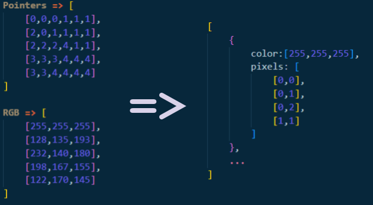
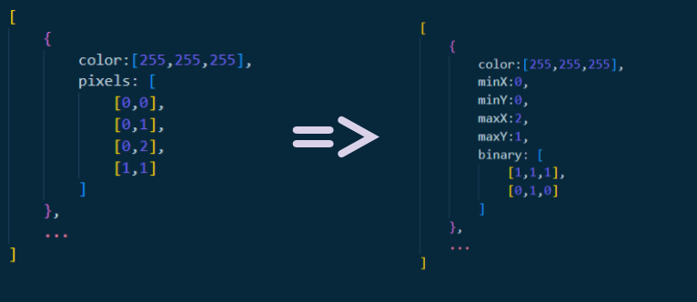
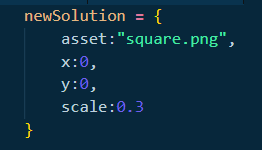
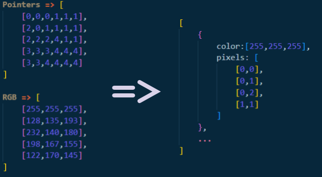
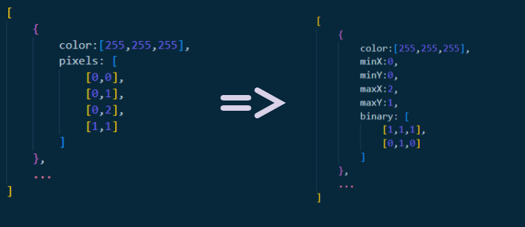
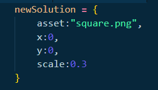

Settings
Path to image
The relative path from the root program directory to the image you want to load into a Geometry Dash level.
Example:
Example:
./image.png
, ./sourceImages/cat.jpg
.
Save location
The relative path from the root program directory to a folder to save important information about the processed image.
Example:
Example:
./saves/firstImport
, ./saves/cat
.
Save Image benchmarks
By default, the program will save files to the save location, some of these are not necesary for the functinoality of the program. These include images that are usefull when loading from a save, or restoring a backup. They can also be useful when diagnosing an issue if you encounter one.
If you do not wan't to save these images, you can disable this setting.
.
If you do not wan't to save these images, you can disable this setting.
Quality optimization
When converting the pixels of an image into Geometry Dash objects, often times it will create artifacts. By enabling this setting, it will decrease these artifacts. This could lead to anywhere from a slight to great increase in the number of objects used.
It acomplishes this by running the algoritm many times, adjusting important values that will affect the result. Such as,
This means that it will take longer to process your image.
It acomplishes this by running the algoritm many times, adjusting important values that will affect the result. Such as,
Overlap quality
and Pass threshold
.This means that it will take longer to process your image.
Image scan resolution
This is the resolution the image will be processed at. It is not the final resolution of the result.
The final result does not have a "resolution" as it is made up of geometric objects, not pixels.
This setting does control the aspect ratio of the result. For example a resolution of
It is strongly recomended to keep this setting low, as high resolutions can lead to long procsess times and high object counts.
The final result does not have a "resolution" as it is made up of geometric objects, not pixels.
This setting does control the aspect ratio of the result. For example a resolution of
180x100
will have an aspect ratio of about 16/9
.It is strongly recomended to keep this setting low, as high resolutions can lead to long procsess times and high object counts.
Compression threshold
The first step of this program is to group similar colors together.
This setting controls how many different colors will be in the final image.
If your result's colors do not look correct, turn this setting down. This will lead to better colors, but a higher object count and a longer process time.
This setting controls how many different colors will be in the final image.
If your result's colors do not look correct, turn this setting down. This will lead to better colors, but a higher object count and a longer process time.
Incorperate threshold
When compressing pixels into color groups, some color groups may only have a few pixels. This is extremely inefficient.
The program will combine any color groups with less pixels than the incorperate threshold into a nearby color group.
This will lead to far fewer objects.
Keep in mind that the effectiveness of a certian Incorperate threshold is directly tied to the process resolution.
The program will combine any color groups with less pixels than the incorperate threshold into a nearby color group.
This will lead to far fewer objects.
Keep in mind that the effectiveness of a certian Incorperate threshold is directly tied to the process resolution.
Enhance Details
When grouping similar colors together, some pixels will be left, not belonging to any color group.
Noramly, they will just be added to a nearby group.
Enchance details will create a new color group for every stray pixel.
This setting is recomended for high quality imports. When not enabled, It can lead to horizontal artifacting on high quality imports.
Noramly, they will just be added to a nearby group.
Enchance details will create a new color group for every stray pixel.
This setting is recomended for high quality imports. When not enabled, It can lead to horizontal artifacting on high quality imports.
White is transparency
This program does not support transparency, as it uses the
This setting will treat all white colors (greater than 245 on every channel) as fully transparent, and remove them after processing.
NOTE: any artifacts in white colors will presist after they are removed. This can lead to non-white parts of the image to be missing.
RGB
color space. It will treat any transparency as black.This setting will treat all white colors (greater than 245 on every channel) as fully transparent, and remove them after processing.
NOTE: any artifacts in white colors will presist after they are removed. This can lead to non-white parts of the image to be missing.
Protect whites
Sometimes, when
When this setting is enabled, it will greatly decrease the number of artifacts present.
This is STRONGLY recomended when
White is transparency
is enabled, it will miss a spot, because of an artifact during color compression.When this setting is enabled, it will greatly decrease the number of artifacts present.
This is STRONGLY recomended when
White is transparency
is enabled.
Overlap quality
When an image is being processed, there are some settings that will influence what the outcome will be.
This setting controls the starting scale of a possible solution.
Generaly, the higher this setting is, the greater the detail and object count.
Unless you know what you are doing, it is not recomended to change this setting.
This setting controls the starting scale of a possible solution.
Generaly, the higher this setting is, the greater the detail and object count.
Unless you know what you are doing, it is not recomended to change this setting.
Pass threshold
If a possible solution has too many artifacts, it will be thrown out.
This setting determines the threshold at which these solutions will be thrown out.
This setting is only relevant if
Unless you know what you are doing, it is not recomended to change this setting.
This setting determines the threshold at which these solutions will be thrown out.
This setting is only relevant if
Quality optimization
is enabled.Unless you know what you are doing, it is not recomended to change this setting.
Bake artifacts
When processing an image, some solutions may overlap onto other color groups.
Normaly nothing will be done about this, and the artifact will usualy be covered up.
When this setting is enabled, it will cut pixels from other color groups that were overlaped onto.
When it is enabled, it will lead to lower object cound and usualy a less detailed result with many artifats.
Occasionaly, in the right circumstances, this setting could improve the quality of the result.
Normaly nothing will be done about this, and the artifact will usualy be covered up.
When this setting is enabled, it will cut pixels from other color groups that were overlaped onto.
When it is enabled, it will lead to lower object cound and usualy a less detailed result with many artifats.
Occasionaly, in the right circumstances, this setting could improve the quality of the result.
Create new level
Whether to load the image into a new Geometry Dash level that the program will create.
The level will be called
The level will be called
Image To GD
.
Geometry Dash level
If you are loading the image into a level that you already have, specify the name of that level.
Editor layer
The layer that the image will be loaded onto in the Geometry Dash editor.
Override auto density ballencing
Geometry Dash has some weird glitches, one of these being that if you have too many objects close together in a level, it will not open.
To solve this, the program will try to calculate the maximum number of objects it will be able to load without crashing the level.
If you get a message in the command prompt saying this has happened, it is recomended to remove the image you loaded and try again at a lower quality. You can also increase the image width until all the objects can be successfully loaded.
Sometimes it will get this wrong and the level will not open.
To fix this, restore a backup and enable this setting, so you can lower the
To solve this, the program will try to calculate the maximum number of objects it will be able to load without crashing the level.
If you get a message in the command prompt saying this has happened, it is recomended to remove the image you loaded and try again at a lower quality. You can also increase the image width until all the objects can be successfully loaded.
Sometimes it will get this wrong and the level will not open.
To fix this, restore a backup and enable this setting, so you can lower the
Specified maximum density
.
Specified maximum density
If you enable
This setting controls the maximum amount of objects that can be loaded based on the
Decrease this setting to remove more objects, and reduce density.
Increase this setting to allow for more detail, if you are being limited by object density.
WARNING: Increasing this setting can lead to your level not opening, and you having to restore a backup made before the change.
Override auto density ballencing
, then you can change this setting. This setting controls the maximum amount of objects that can be loaded based on the
Image width
. Decrease this setting to remove more objects, and reduce density.
Increase this setting to allow for more detail, if you are being limited by object density.
WARNING: Increasing this setting can lead to your level not opening, and you having to restore a backup made before the change.
Save location - (Load from Save)
The save name from a previous image that you loaded that you want to re-add, to another level.
It can take time to process some images so if you want, you can load an image that you already processed directly into another level.
Just specify the save name for the image you want to re-add.
It will show you a preview of the image if
It can take time to process some images so if you want, you can load an image that you already processed directly into another level.
Just specify the save name for the image you want to re-add.
It will show you a preview of the image if
Save Image benchmarks
was enabled for that save.
Errors, Warnings and Problems
This program was built for windows, it will not work on mac or linux.
Nothing was added to my GD levels
This likley means you had Geometry Dash open when you ran the program.
Close GD and re-run the program.
If it still doesn't work, submit an issue on the github page.
Close GD and re-run the program.
If it still doesn't work, submit an issue on the github page.
File read/write errors
If you recieve any errors that mention not being able to read, write, or find files, you should check the permissions of the
Make sure it has acsess to the disk that Geometry Dash is located on.
If it still doesn't work, try removeing and reinstalling the program to a different location.
If the issue still persists, submit an issue on the github page.
GDImageLoader.sh
file.Make sure it has acsess to the disk that Geometry Dash is located on.
If it still doesn't work, try removeing and reinstalling the program to a different location.
If the issue still persists, submit an issue on the github page.
Error! Could not open or find GD save file
This likley means Geometry Dash is not installed in the proper place,
or the
Follow instructions for
or the
GDImageLoader.sh
file does not have proper permissions.Follow instructions for
File read/write errors
.
Save directory warning
If you get a warning that says
The program will over-write all the data of the previous save at that location.
filepath ____ already exists
, it means that you already have a save folder by that name. The program will over-write all the data of the previous save at that location.
Object density warning
This warning means that the program had to remove objects from the result image to prevent the level from crashing.
For a better looking image, decrease the quality or increase the
If your level does not open follow instructions for
For a better looking image, decrease the quality or increase the
Image width
.If your level does not open follow instructions for
I can't open my level
.
All my levels disappeared
This is almost certianly a big in the program.
Restore a backup by running the
Submit an issue on the github page.
Restore a backup by running the
Recovery.sh
file.Submit an issue on the github page.
I can't open my level
First restore a backup by running the
Then when you try to load the image again, in the configuration, enable
If it still does not open, repeat this step and decrease
Recovery.sh
file.Then when you try to load the image again, in the configuration, enable
Override auto density ballencing
, then decrease Specified maximum density
.If it still does not open, repeat this step and decrease
Specified maximum density
even more.
Other issues
Procedure
This program can be broken up into 3 major parts:
Compression
,
Conversion
, and
Construction
.
Compression:
The first and easiest step is loading the input image into a bitmap, then compressing that bitmap's colors to assist with conversion.
The program will load the image into a bitmap with dimentions of
After this is done, the program scans every pixel and if the color is withing
When this process is finished, there may be some pixels that were never combined into a color group.
If
If it is not enabled, the pixel will be combined with a nearby group.
This can cause horizontal artifacting if your
The program will load the image into a bitmap with dimentions of
scanResX
*scanResY
.After this is done, the program scans every pixel and if the color is withing
compressionThreshold
% of a neighbor pixel, they will be combined into a color group.When this process is finished, there may be some pixels that were never combined into a color group.
If
Enchance details
is enabled, it will create a new color group for each of these single pixels.If it is not enabled, the pixel will be combined with a nearby group.
This can cause horizontal artifacting if your
compression threshold
is too low, as this behaviour will ocour for many neighboring pixels.
Conversion:
The goal of this next step is to convert the raster data of the compressed image, into a set of geometric primitives (circles, squares, triangles).
This is acomplished by having the raster data go under many transformations, until it is comparable with these primitives.
When the color groups exit the compression phase, they are stored as a bitmap of pointers (Each for the corisponding pixel), pointing to a color, stored as sperate data.
The first transformation is turing this set of pointers into color groups repersented as objects that contain all the pixels of the group as well as the color.

After this transformation, the
The next transformation is from these group objects, to bounded groups.
Bounded groups are repersented by the bounds of the group relative to the image, and a binary bitmap of these bounds, showing which pixels in the bounds belong to the color group.
This is important because of the way the geometric primitive references are loaded and stored.

Next we want to sort this array of bound groups from least to greatest based on the amount of pixels they have.
This will greatly increase the quality of the result if
We can do this by comparing the groups to reference primitives.
These reference image are located in
These reference Images are also loaded into binary bitmaps, just like the bound groups.
This program creates new primitives, and tries to fit them inside these bound groups. A new primitive that is loaded is refered to as a "solution".
This will look something like this:

We can then grade how well a solution solves a bound group.
We do this by finding the total number of overlapping pixels, as well as how many pixels overlap with a different group.
We want the former to be larger, while the latter smaller.
Now that we can grade solutions, we can start improving the solutions.
A solution can be improved by maximizing the overlapping pixels, while minimizing the overlap with other groups.
We can improve a solution by sampling the scores when it moved left, right, up and down.
We can then reposition the solution based on the results from the samples until the solution is in the optimal position.
Finding the optimal scale is more difficult.
This is because if the number of pixels overlapping with the group is low, we want to increase the scale.
But, if the number of pixels overlapping with other groups is high, we want to decrease the scale.
We can implement a feedback mechanism to bounce back and forth between increasing and decreasing the scale, until it will eventualy come to an equilibrium.
Now we have the optimal solution given an asset and bound group.
We can run this algorithm on each asset that we have to find the best solution for a given group.
There are also some settings that can influence the output of this algorithm, such as the
This setting controls the starting scale of a solution.
Generaly, the greater this value, the smaller the resulting solution will be. This means that the resulting image quality will be higher, but there will be more objects used.
We can get even better results by recursing over the function to find the optimal solution.
Recursing is determined by
We can then track the ending score of the iteration, and if it is greater than the score from the previous iteration, it will return that solution.
When recursing we can also reject solutions that do now have a satisfactory score. The rejection threshold is determined by
We can then repeat this function on a bound group, until all of the pixels are covered by the geometric primitives.
Now we have an algorithm that can turn a bound group into a set of primitives from
Next, all we have to do is run this algorithm on every bound group, then compile every solution and save it to the
Some other files are saved as well, such as
Comp.png: An save from after compression.
PrimSet.png: An image contructed from the final primitives.
Standard.png: A standard raster image with the same amount of pixels as objects in PrimSet.png
Stats.json: A record of the configuration used, process times, process scores, and reference primitives used.
This is acomplished by having the raster data go under many transformations, until it is comparable with these primitives.
When the color groups exit the compression phase, they are stored as a bitmap of pointers (Each for the corisponding pixel), pointing to a color, stored as sperate data.
The first transformation is turing this set of pointers into color groups repersented as objects that contain all the pixels of the group as well as the color.

After this transformation, the
incorperate threshold
is integrated.The next transformation is from these group objects, to bounded groups.
Bounded groups are repersented by the bounds of the group relative to the image, and a binary bitmap of these bounds, showing which pixels in the bounds belong to the color group.
This is important because of the way the geometric primitive references are loaded and stored.

Next we want to sort this array of bound groups from least to greatest based on the amount of pixels they have.
This will greatly increase the quality of the result if
Bake artifacts
is enabled.
Now we need to this array of bound groups into an array of primitive objects.
We can do this by comparing the groups to reference primitives.
These reference image are located in
./assets/
. If you want you can add other image to this directory, and they will automaticly be used in future image loads.
You will also need to add a way to convert them to GD objects in
./build.js
.These reference Images are also loaded into binary bitmaps, just like the bound groups.
This program creates new primitives, and tries to fit them inside these bound groups. A new primitive that is loaded is refered to as a "solution".
This will look something like this:

We can then grade how well a solution solves a bound group.
We do this by finding the total number of overlapping pixels, as well as how many pixels overlap with a different group.
We want the former to be larger, while the latter smaller.
Now that we can grade solutions, we can start improving the solutions.
A solution can be improved by maximizing the overlapping pixels, while minimizing the overlap with other groups.
We can improve a solution by sampling the scores when it moved left, right, up and down.
We can then reposition the solution based on the results from the samples until the solution is in the optimal position.
Finding the optimal scale is more difficult.
This is because if the number of pixels overlapping with the group is low, we want to increase the scale.
But, if the number of pixels overlapping with other groups is high, we want to decrease the scale.
We can implement a feedback mechanism to bounce back and forth between increasing and decreasing the scale, until it will eventualy come to an equilibrium.
Now we have the optimal solution given an asset and bound group.
We can run this algorithm on each asset that we have to find the best solution for a given group.
There are also some settings that can influence the output of this algorithm, such as the
Overlap quality
.This setting controls the starting scale of a solution.
Generaly, the greater this value, the smaller the resulting solution will be. This means that the resulting image quality will be higher, but there will be more objects used.
We can get even better results by recursing over the function to find the optimal solution.
Recursing is determined by
Quality optimization
.
Every recursion iteration, we can mutate the Overlap quality
, as well as the starting position of the solution.We can then track the ending score of the iteration, and if it is greater than the score from the previous iteration, it will return that solution.
When recursing we can also reject solutions that do now have a satisfactory score. The rejection threshold is determined by
Pass threshold
.We can then repeat this function on a bound group, until all of the pixels are covered by the geometric primitives.
Now we have an algorithm that can turn a bound group into a set of primitives from
./assets/
.Next, all we have to do is run this algorithm on every bound group, then compile every solution and save it to the
save location
as ConstructFile.gdi
.Some other files are saved as well, such as
Comp.png: An save from after compression.
PrimSet.png: An image contructed from the final primitives.
Standard.png: A standard raster image with the same amount of pixels as objects in PrimSet.png
Stats.json: A record of the configuration used, process times, process scores, and reference primitives used.
Construction:
The final step is to take the ConstructFile.gdi generated in step 2, and load it into Geometry Dash.
The encription of Geometry dash levels has been cracked for Windows. It is still unknown how to decode levels on Mac, or Linux.
On windows they can be decoded by running your save file through a xor cypher with a key of 11, converting it from base-64 and then, then running it through z-lib decompression.
This will give you an xml plist. We can then decode this plist into different levels. Finally you can extract the object data by converting key value pair
Now we need to turn our
Now we can turn these primitives into GD object strings.
We can compress and insert this string back into the save file, and then re-encode the file.
Once we replace the old save file with the new one, the image should be loaded into your level.
One interesting issue with Geometry Dash, is that if you have too many objects close together, the level will not open.
This program has some automatic systems to make sure it does not pass this limit by randomly removing objects if it does pass the limit.
Sometimes it miscalucates and your level will not open, if this happens follow the steps in the
The encription of Geometry dash levels has been cracked for Windows. It is still unknown how to decode levels on Mac, or Linux.
On windows they can be decoded by running your save file through a xor cypher with a key of 11, converting it from base-64 and then, then running it through z-lib decompression.
This will give you an xml plist. We can then decode this plist into different levels. Finally you can extract the object data by converting key value pair
k4
from base-64 and running it through z-lib decompression again.Now we need to turn our
ConstructFile.gdi
into Geometry Dash objects. The coordinates and scale for primitives are stored relative to the width they will be loaded at, so we just need to scale them up based on the Image width
.Now we can turn these primitives into GD object strings.
We can compress and insert this string back into the save file, and then re-encode the file.
Once we replace the old save file with the new one, the image should be loaded into your level.
One interesting issue with Geometry Dash, is that if you have too many objects close together, the level will not open.
This program has some automatic systems to make sure it does not pass this limit by randomly removing objects if it does pass the limit.
Sometimes it miscalucates and your level will not open, if this happens follow the steps in the
Errors
to fix it.That's it!